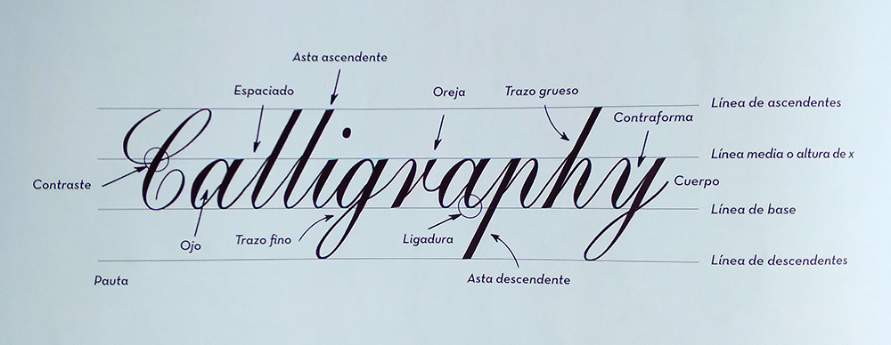

Se puede hacer caligrafía con pluma, pincel o rotuladores caligráficos. Para iniciarse con la pluma debe saber que se compone de dos partes: la plumilla que es la parte metálica, donde se carga la tinta, y el portaplumas (también llamado mango) que puede ser de madera o de plástico, recto u oblicuo. Existen plumillas puntiagudas (expansión) y de punta recta (traslación). La línea que se realiza con ella se llama trazo. Existen los trazos finos y los gruesos; la diferencia entre ellos se conoce como contraste. Cuando el trazo se sitúa al principio de una letra, se denomina trazo de entrada o inicial y, cuando se encuentra al final, se llama trazo de salida.
Como ya sabes, la minúscula es la letra de menor tamaño, la cual usamos habitualmente para escribir. Y la mayúscula o capital es la letra de tamaño mayor para inicio de frase. Estas letras se sitúan sobre la pauta: se trata de unas líneas dibujadas sobre el papel para ayudar a hacer unas letras de un tamaño adecuado. Después del secado de la tinta, estas líneas deben borrarse.
La altura de x se refiere a la altura de las minúsculas pequeñas como la "x", "a", "m", etc. Es la línea media la que describe el límite superior de las minúsculas. En cambio, la línea de base es la línea donde se asientan la mayoría de las letras como la "x", a", "m", etc.
Asimismo, se denomina asta ascendente a la parte superior de las letras minúsculas que sobrepasan la altura de x, como por ejemplo la "b", "h", "t", etc. Por tanto, la línea de ascendentes es la línea que marca el límite superior de las minúsculas ascendentes. Por otra parte, se denomina asta descendente a la parte inferior de las letras minúsculas que bajan por debajo de la línea de base, como la “g”, “j”, "y", etc. Entonces, la línea de descendentes es la línea que marca el límite inferior de las minúsculas descendentes.
Ello no quiere decir que para hacer caligrafía siempre debas situar estas cuatro líneas; a menudo, cuando queremos algo más expresivo, con la línea de base es suficiente.
La parte central de todas las letras que se sitúa entre la línea media y la de base se llama cuerpo. La contraforma es la parte interior de la letra. En casos de letras completamente cerradas como la "a" y la "b", el interior de la letra se denomina ojo. Otras letras como la "r" tienen rasgos sueltos, que son conocidos como oreja o ápice.
El espaciado se refiere al hueco que hay entre las letras de una misma palabra. Y la unión entre dos letras se llama ligadura. No todas las letras caligráficas minúsculas se deben unir, ello dependerá del alfabeto que estés trabajando.
Por último, el ángulo de escritura es la relación entre el borde de la pluma y la línea de base. Este varía en función del tipo de caligrafía que se realice y siempre es constante.
Ahora sí, ha llegado la primera toma de contacto con tu pluma. Encaja de manera concéntrica la base curvada de la plumilla en la parte abierta del portaplumas. Después sumerge la plumilla hasta la mitad en el tintero. A continuación, escurre el exceso de tinta en el borde del tintero. La herramienta se apoya en el hueco de la mano y se sujeta con el triángulo formado por el pulgar, el índice y el corazón. Estos tres dedos se sitúan cerca de la plumilla, a un centímetro aproximadamente. En caso de que necesites hacer movimientos más amplios, prueba a tomar el portaplumas un poco más hacia arriba. Recuerda que la sujeción de la pluma debe ser firme y controlada.
Sentarte correctamente te ayudará a concentrarte y adoptar una posición más cómoda: con la espalda recta y los pies apoyados en el suelo. Si eres diestro, sitúa la hoja de papel inclinada a 45° hacia la izquierda y sujétala con la mano izquierda. Si eres zurdo, la posición será la opuesta. Sobre la hoja, apoya de manera relajada la mano con la que escribes, sin hacer fuerza ni tensión.
El espacio de trabajo debe ser amplio y bien iluminado, con todo lo necesario cerca: pluma, tinta y papel. La tinta debe estar en el lado de la mano con la que escribes para evitar manchar el papel. Los tipos de papel idóneos para escribir con tinta son el papel específico de caligrafía y el del tipo verjurado. Además, también necesitarás un poco de agua y un trapito para limpiar la pluma de vez en cuando.
La pluma no es un bolígrafo cotidiano y no debe de usarse perpendicularmente al papel. Para una correcta posición, crea un ángulo de 45° entre la pluma y el papel. Si eres diestro, la punta de la pluma deberá estar un poco alineada a la línea de base entrando desde abajo. Si eres zurdo y sueles escribir por debajo de esta línea, puedes colocar la mano igual que un diestro. Si, por lo contrario, eres un zurdo que habitualmente escribe por encima de la línea media, debes situar la muñeca por encima de la línea de ascendentes y la punta de la plumilla debe de situarse cerca de la línea de base desde arriba. En los tres casos, mantén siempre el mismo ángulo de posición.
*Todas las plumillas nuevas poseen una capa protectora. Antes de encajarla en el portaplumas y empezar a usarla, límpiala con un poco de pasta de dientes y agua destilada con un paño. Si notas que la plumilla repele la tinta (en forma de gotas superficiales) prueba a quemarla con un mechero, no más de un segundo. Una vez acabes cada práctica, debes limpiar la plumilla con agua (mejor destilada) y secarla bien.
